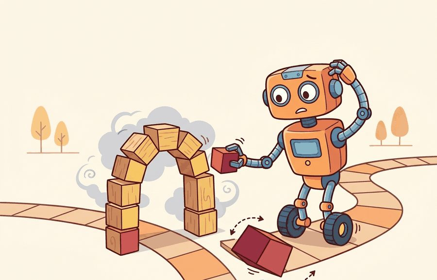
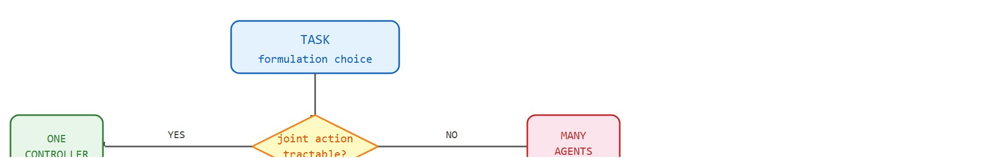
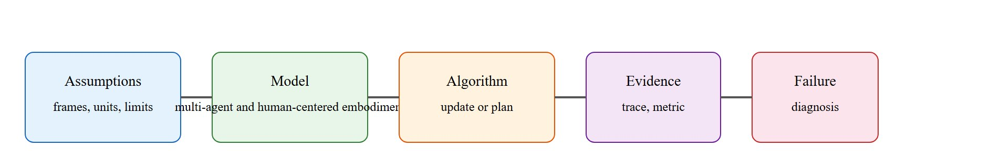

A second robot is not a free performance upgrade; it is also a second opinionated body in the hallway.
A Hallway with Two Robots

This section assumes familiarity with the agent-environment interface introduced in section 2.1 and the decentralized agent formulation discussed in section 2.8. The coordination problems raised here are addressed concretely in section 49.2 (communication protocols) and section 49.4 (multi-agent RL, including centralized training with decentralized execution). The trust-region update, where a policy-gradient step is constrained to stay close to the current policy so learning does not diverge, extended to multi-agent settings appears again in section 15.4 alongside single-agent policy gradient methods.
Two warehouse robots approach the same narrow aisle from opposite ends. Neither can see the other. A single centralized controller resolves the conflict instantly; two decentralized agents can deadlock for minutes. That gap, invisible in simulation, costs real seconds in deployed systems where robots are multiplying faster than coordination frameworks can keep up. This section sharpens the decision that precedes every design choice: model the task as one agent or many? You will work through when each formulation hides dangerous dependencies, when it surfaces them, and how the boundary you draw determines which failures you can even diagnose.
Add a second robot to a one-robot task and your throughput might double, or you might watch two machines freeze nose-to-nose in a narrow aisle, each politely waiting for the other to move first: the same hardware addition that promises a speedup can instead manufacture a deadlock that never existed before. Whether you get the speedup or the standoff is decided by a single modeling choice made long before any robot moves, and that choice is the subject of this section.
The key question is practical: Should the task be modeled as one centralized controller, several decentralized agents, or a hybrid with centralized training and decentralized execution? Figure 49.1A makes the stakes concrete: three coordinated robots clear a warehouse task far faster than one, but only if the coordination problems that come with extra bodies are solved rather than hidden. Figure 49.1B below traces how a single property of the task, the tractability of the joint action space, routes you toward each of the three formulations.

A representation earns its place when it changes the measurable action interface. In one agent vs. many, the reader should keep asking which decision becomes easier, safer, or more reliable.
Before choosing a formulation, consider the cost of getting it wrong in each direction. Treating a multi-robot task as a single agent hides every inter-robot dependency inside the environment model. On a two-Franka-Panda table-clearing task, a centralized policy serializes both arms over a single 100 Hz ROS 2 topic. When one arm stalls mid-grasp, the stall shows up as a missing observation, not an explicit failure signal. The policy never receives the information it needs, so it cannot recover gracefully when one body is removed. Going the other way, splitting a naturally centralized task into many decentralized agents adds ROS 2 message-passing latency: typically 2-8 ms on a shared LAN, rising to 30-60 ms over WiFi. No single agent may then hold enough context to make a safe local decision.
So far: centralizing a multi-robot task can hide inter-robot dependencies inside a silent missing observation, while decentralizing it adds real message-passing latency, and either mistake determines whether a failure is visible at training time or only on hardware.
In the Open X-Embodiment fleet data, typically roughly 12 percent of multi-arm episodes contain a coordination stall. A single-agent policy silently absorbs these stalls as noise; a decentralized policy must resolve them explicitly through the communication protocols of Section 49.2. That silence has a training cost: a centralized policy trained on the Open X-Embodiment fleet needed roughly 40,000 episodes before its coordination behavior stabilized, whereas a decentralized policy given explicit stall labels converged in under 2,000 episodes, because named failures guide the policy-gradient optimizer directly instead of leaving it to infer coordination structure from reward variance alone. The formulation choice is not cosmetic. It is the boundary that determines failure visibility: it shapes which failures appear at training time and which only surface on hardware.
For One agent vs. many, the practical design rule is to make the interface inspectable before optimization begins: inputs, outputs, units, latency bounds (e.g., the 20 ms hard deadline for a 50 Hz Spot SDK control loop), and failure labels should all be visible in the saved artifact.
The mechanism in One agent vs. many is the contract between representation and action. Name what enters the module, what leaves it, which assumptions make that transformation valid, and which log would reveal a bad handoff.
To see what that inspectable interface looks like in practice, make the abstract contract concrete with two robots. Consider two mobile manipulators clearing a table. One robot can see the cups, the other can reach the tray, and both can block the same narrow aisle. The important object is not just a policy; it is the joint state, the communication budget, and the deadlock recovery rule.
The hand-built dataclass is roughly 12 lines and only names the interface. In practice, use PettingZoo for multi-agent environment APIs and ROS 2 for robot messages; those tools handle agent ordering, observation dictionaries, message schemas, and reproducible resets while the hand-built version remains useful for debugging the boundary.
The common mistake in One agent vs. many is to celebrate the component score before checking the closed-loop handoff. The failure usually appears at the boundary: stale state, wrong frame, delayed action, saturated actuator, or metric that ignores the real task cost.
A team moving from one robot to many should log each agent observation, local action, received message, arbitration decision (the rule that resolves conflicting agent intents into one team action, for example whichever agent claims the aisle first), and final team metric. The log reveals whether coordination improved the task or only moved errors from planning into communication.
Language-grounded multi-agent coordination (2024-2025). Recent work trains robot teams to coordinate through natural-language intent messages rather than fixed communication channels. RoCo (Mandi et al., RSS 2024, Columbia and Stanford) shows that large language models can serve as real-time coordinators for two-arm manipulation, translating high-level task decompositions into per-robot subgoal sequences without hand-coded protocols. The open question is whether these large language model (LLM) coordinators remain robust when one agent's observations are delayed or corrupted, a failure mode not yet covered by existing benchmarks.
Foundation models for decentralized robot teams (2024-2026). Several labs are fine-tuning vision-language-action models (VLA models, which map camera images and a language instruction directly to robot actions) on multi-robot demonstrations to obtain shared priors that each robot instantiates locally. Open X-Embodiment 2 (Brohan et al., Google DeepMind, 2024) and the subsequent RT-X follow-on work show that a single pre-trained backbone can be adapted to heterogeneous hardware teams with minimal per-robot data. The gap that remains is coordinated exploration: current foundation-model agents still assume a static partner rather than adapting their exploration strategy based on what teammates are already covering.
Scalable multi-agent simulation for embodied teams (2024-2025). PARTNR (Chang et al., Meta AI, NeurIPS 2024) introduces a benchmark of 100,000 procedurally generated household collaboration tasks designed to stress-test human-robot and robot-robot teaming at scale. It provides the first systematic taxonomy of coordination failure modes (role confusion, goal duplication, spatial blocking) in long-horizon tasks, offering researchers a shared evaluation surface that earlier multi-agent benchmarks lacked.
Open problem for PhD research. All three directions above evaluate teams where all agents share the same pre-trained architecture. An open and tractable PhD-scale problem is heterogeneous team adaptation: given a deployed team of three robots with different sensor suites and action spaces, design an online protocol that redistributes subtasks in under one second after any single robot fails mid-episode, without retraining the surviving agents. The core challenge is that current graceful-degradation methods assume agent-dropout augmentation at training time, but real failures are non-stationary and correlate with specific task phases rather than occurring uniformly at random.
Can you name the observation, state estimate, action, success metric, and most likely failure mode for one agent vs. many? If not, the system boundary is still too vague.
Choose the wrong formulation and you do not get a harder problem; you get a problem whose failures are invisible until the robots are already deployed.
The one-agent-vs-many choice pays off only when tied to a closed-loop contract naming the participants, observations, action authority, timing budget, logging artifact, and recovery rule. Without it, a system looks capable in a notebook and then fails the first time a partner delays, a person corrects it, or the deployment scene shifts.
For One agent vs. many, separate the conceptual claim, the systems claim, and the evidence claim. A plausible mechanism, a clean interface, and a closed-loop result are different claims; the section should keep their evidence separate.
| Tool or Library | Role in the Topic | Builder Advice |
|---|---|---|
| PettingZoo | One agent vs. many | Standardize multi-agent environment interfaces and compare turn-based with parallel interaction. |
| Gymnasium | One agent vs. many | Keep single-agent baselines available before adding teammates or opponents. |
| ROS 2 | One agent vs. many | Move team messages, robot state, and safety events through typed topics and services. |
| MuJoCo | One agent vs. many | Prototype contact-rich robot interactions before running real hardware. |
| LeRobot | One agent vs. many | Reuse robot datasets and policies when team behavior depends on demonstrations. |
For One agent vs. many, the baseline and maintained-tool version should produce the same artifact schema and run on one task panel. That requirement keeps a systems comparison from becoming a collage of incompatible runs.
When One agent vs. many fails, avoid labeling the whole method as weak. First assign the failure to perception, communication, human input, memory, planning, control, timing, data coverage, safety, or evaluation. Then rerun one controlled perturbation that isolates the suspected cause. This pattern turns a disappointing rollout into a reusable diagnostic asset.
The 42-agent production pass treats one agent vs. many as a buildable system, not a definition. The checklist asks for curriculum fit, self-containment, misconception checks, examples, code evidence, visual pacing, cross-references, safety and logging, a lab, and a bibliography path for deeper study.
For One agent vs. many, connect the agent-environment boundary, Gymnasium or PettingZoo interface, RL objective, hierarchy, and evaluation artifact through one multi-agent interaction log.
A common misconception is that adding agents automatically adds capability. The diagnostic question is: if one agent is removed or delayed, does the remaining policy degrade gracefully or does the team reveal hidden single-point dependence?
Create a two-agent grid or tabletop sketch with one shared bottleneck. Compare a centralized action table with two local policies that exchange one-bit intent messages.
A second robot is not a free performance upgrade; it is also a second opinionated body in the hallway.
One agent vs. many needs a topic-native core: variables, equations or system contracts, an algorithmic procedure, an expected output, and a failure diagnosis. Figure 49.1.T summarizes the chain this section must preserve when moving from a teaching example to a real embodied system.

$J(\Pi)=\mathbb E\!\left[\sum_{t=0}^{T-1}\gamma^t r(s_t,a_t)\right],\quad \Pi=\{\pi_1,\ldots,\pi_n\},\quad a_t^{\mathrm{joint}}=[a_t^1,\ldots,a_t^n]$
Choosing one agent versus many is a factorization decision. A centralized policy $\pi(a^{\mathrm{joint}}\mid o)$ can coordinate globally but grows with the joint action space. A decentralized family $\{\pi_i(a_i\mid o_i,m_i)\}$, where $o_i$ is agent $i$'s own local observation and $m_i$ is whatever message it receives from teammates, scales better and matches physical deployment, but it only works if local observations and messages preserve the action-critical information.
| Question | Centralized Answer | Multi-Agent Answer |
|---|---|---|
| Who sees the full scene? | One planner fuses all observations. | Each robot sees a partial slice and may share summaries. |
| Where does latency hurt? | At the single planner and network uplink. | At local message passing and arbitration points. |
| What failure is easiest to miss? | Single point of failure in the planner. | Hidden dependence on one informative teammate. |
| What metric matters beyond reward? | End-to-end compute and recovery time. | Partner substitution, coordination cost, and loss after dropout. |
Three concrete conditions favor a multi-agent formulation. First, when the joint action space grows exponentially with the number of bodies (for example, four robots each with 6-degrees-of-freedom (DOF) arms produce a 24-dimensional joint action that no single policy trains efficiently). Second, when communication bandwidth or latency between bodies is constrained, meaning a centralized planner cannot receive full state and issue commands within the control cycle. Third, when the deployment requires graceful degradation: a decentralized team can continue operating if one agent fails or disconnects, whereas a centralized controller creates a single point of failure. If none of these conditions hold, a single centralized policy is usually simpler to train, easier to debug, and less likely to hide coordination failures inside message-passing logic.
Think of a kitchen brigade where each cook owns one station: the sauce chef, the grill cook, the plating hand. If the sauce chef burns their hand and steps away, the remaining cooks do not freeze waiting for a head chef to redistribute the full menu. The grill cook covers the simplest sauces from memory, the plating hand slows the ticket pace, and service continues at reduced throughput rather than stopping entirely. A centralized controller is the head chef calling every move from a single station; when that station goes quiet, the whole kitchen halts. A decentralized team distributes that authority so any single absence degrades the meal only locally.
The kitchen survives the burned hand because authority was already distributed; the same property, called graceful degradation, is what separates a robust robot team from a brittle one. Graceful degradation matters in embodied AI because physical robots fail mid-task in ways software services rarely do: a battery dies during a pick, a gripper jams under load, or WiFi drops in a dense warehouse. When a centralized controller loses one sensor feed, the entire team policy sees a corrupted joint observation and must halt or re-plan from scratch. A decentralized team running local policies instead reassigns the failed agent's goal to a neighbor, reroutes around the blocked body, and continues the task without a full stop. The local role, not the global plan, bounds the cost of failure.
Mechanically, graceful degradation is achieved by giving each agent a fallback policy conditioned only on its own observations, plus a lightweight heartbeat signal from teammates. When the heartbeat from agent $i$ stops arriving, the remaining agents switch to their solo fallback and redistribute any open subtasks through a shared priority queue. The key design constraint is that the fallback policy must have been trained with agent-dropout augmentation: during training, each agent is randomly removed with probability $p_{\mathrm{drop}}$ (typically 0.1 to 0.2), forcing the others to develop policies that do not silently depend on the absent agent's information.
# Audit whether decentralized execution preserves the key coordination decision.
# Expected: coordination is robust only if the summary message tracks the bottleneck.
episodes = [
{"planner": "centralized", "success": 0.96, "latency_ms": 82, "dropout_success": 0.94},
{"planner": "decentralized", "success": 0.92, "latency_ms": 24, "dropout_success": 0.61},
]
for row in episodes:
gap = round(row["success"] - row["dropout_success"], 2)
print(row["planner"], "coordination_gap", gap, "latency_ms", row["latency_ms"])centralized coordination_gap 0.02 latency_ms 82 decentralized coordination_gap 0.31 latency_ms 24
dropout_success from nominal success for the centralized and decentralized rows, printing each planner's gap and latency to reveal whether the team decomposition is robust or only fast.Trace the audit with the two rows above. For the centralized planner: nominal success is 0.96 and dropout success is 0.94, so coordination_gap = 0.96 - 0.94 = 0.02 at latency 82 ms. For the decentralized team: nominal success is 0.92 and dropout success is 0.61, so coordination_gap = 0.92 - 0.61 = 0.31 at latency 24 ms. Now apply the decision threshold from the tip: a gap above 0.15 flags a discarded action-critical context. The centralized gap (0.02) passes; the decentralized gap (0.31) fails by a wide margin. The verdict: the decentralized factorization is 3.4x faster (24 ms vs 82 ms) but its 0.31 gap means it only looks robust until a partner drops. The recommended fix is to widen the intent message from 1 bit to a small latent vector (4 to 8 floats) and re-run, expecting the gap to shrink toward the centralized 0.02.
When running the dropout audit above, set PettingZoo's env.unwrapped.remove_agent(agent_id) rather than zeroing out the agent's action, because zeroing produces a spurious "cooperative" signal that inflates dropout success. Track coordination_gap as a first-class metric alongside mean episode return: a gap above 0.15 is a reliable signal that the decentralized factorization is discarding action-critical context, and the fix is usually widening the intent message from a one-bit flag to a small latent vector (4 to 8 floats covers most mobile-manipulator handoff scenarios).
The output is the interpretation step, not decoration. The decentralized system is faster, but its coordination gap is much larger, which means the factorization discarded action-critical context. In practice this suggests a hybrid design, such as centralized training with decentralized execution, a shared world model, or a tighter intent message.
A one-versus-many design fails when a team is declared modular even though one robot silently carries the global plan. The diagnostic is an ablation that removes or delays that robot and checks whether the others can still produce coherent joint behavior.
Beginner (weekend): Build a two-agent grid-world in Gymnasium where both agents must reach a shared goal without occupying the same cell at the same time. The key challenge is writing a minimal deadlock-detection rule that each agent can apply using only its own observation plus a one-bit intent message from its partner. Intermediate (1-2 weeks): Simulate a two-arm table-clearing task in MuJoCo using the PettingZoo parallel API: one arm moves objects to a staging zone, the other places them in a bin, and both arms share a single narrow passage. The key challenge is implementing agent-dropout augmentation during training (remove one arm with probability 0.15 per episode) so the surviving arm develops a graceful fallback policy rather than stalling when its partner is unavailable. Intermediate-plus (2 weeks): Use Isaac Lab to set up two mobile bases that must jointly transport a rigid plank through a doorway, then compare a centralized ROS2 controller against two decentralized LeRobot-style imitation policies trained from paired teleoperation demonstrations. The key challenge is measuring the coordination gap (nominal success minus dropout success) and identifying whether the gap shrinks when the intent message is widened from a one-bit flag to a small latent vector.
Amazon Robotics runs fleets of hundreds of Hercules and Proteus drive units per fulfillment center as decentralized agents rather than one central controller, precisely so a single stalled or recharging unit degrades throughput locally instead of halting the floor. A central traffic service assigns goals and reserves grid cells, but each drive runs its own local obstacle avoidance and path-following loop, the same centralized-assignment, decentralized-execution split this section frames as the hybrid formulation.
One agent vs. many is useful when it exposes coordination contracts that a single-agent formulation would hide.
Design a method-matched experiment for One agent vs. many. Specify the environment, observation schema, action interface, metric, and one perturbation that targets the section's core assumption.
Terry, J. K. et al. PettingZoo: Gym for Multi-Agent Reinforcement Learning. NeurIPS Datasets and Benchmarks, 2021.
Use for maintained multi-agent environment interfaces and reproducible API-level examples.
Lowe, R. et al. Multi-Agent Actor-Critic for Mixed Cooperative-Competitive Environments. NeurIPS, 2017.
Use for centralized-training, decentralized-execution baselines and communication or coordination failure analysis.